Motion Graphics Demo
Komplette Übersicht aller verfügbaren Animationen und Effekte
Fade Animationen
Motion Animationen
Text & Content Animationen
Animated Headline mit Word Reveal
Diese Überschrift animiert sich Wort für Wort in die Seite.
Erste Zeile mit Stagger
Zweite Zeile mit Stagger
Dritte Zeile mit Stagger
SVG Motion Graphics
Eingebettete Motion Graphics mit Echtzeit-Animationen:

Counter & Zahlen Animationen
Implementierungen
Effizienzgewinn
Tage Lieferzeit
Code Beispiele
HTML für Fade Animation:
JavaScript API:
CSS Variablen:
SaaS Integration Features
📊 Analytics
Automatisches Event Tracking und Performance Monitoring
🔄 Data Sync
Nahtlose Synchronisation mit externen Systemen
⚙️ Personalisierung
Adaptive UI basierend auf Benutzervorlieben
🧪 A/B Testing
Built-in Framework für Varianten-Tests
📱 Offline-First
Service Worker & Sync für Offline-Unterstützung
⚡ Performance
Core Web Vitals Monitoring & Optimization
Scroll-basierte Animationen
Diese Elemente animieren, wenn Sie sie in den Viewport scrollen:
Scroll Element 1
Scrolle nach unten um diese Animation zu sehen
Scroll Element 2
Jedes Element hat eine eigene Verzögerung
Scroll Element 3
Smooth und elegant in die Seite